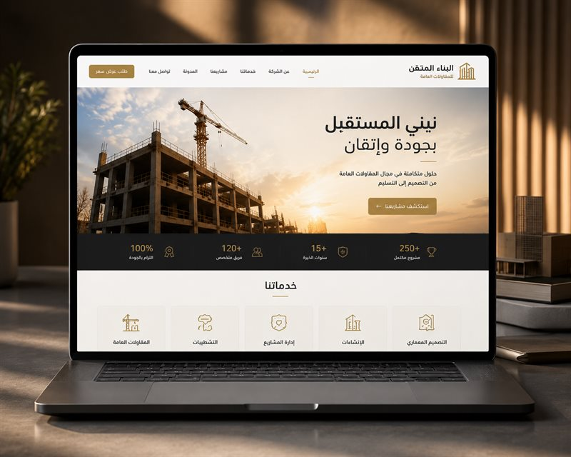
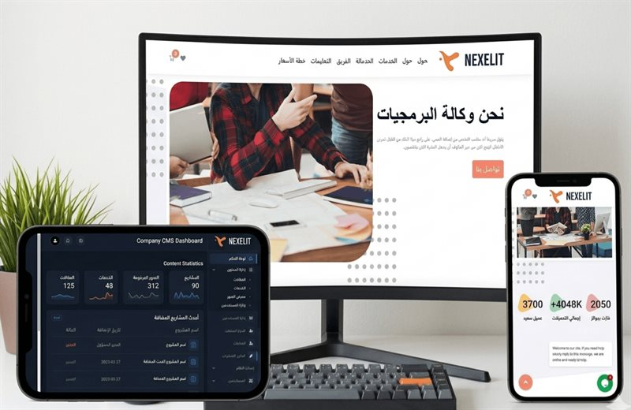
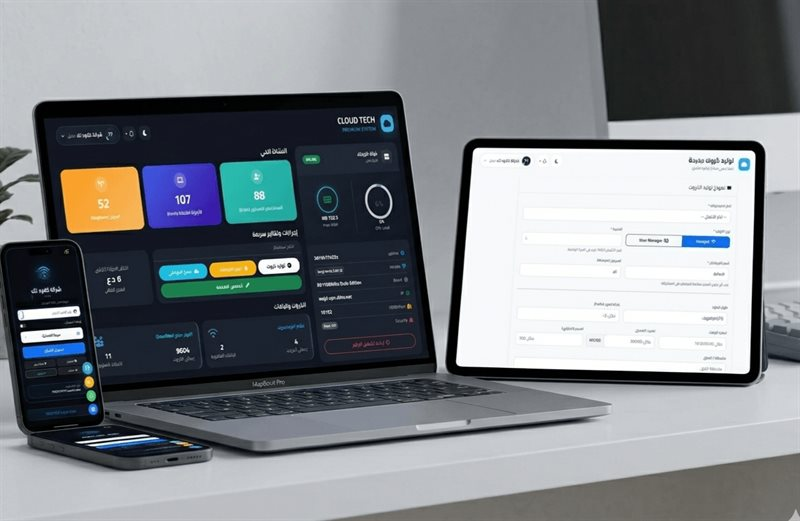
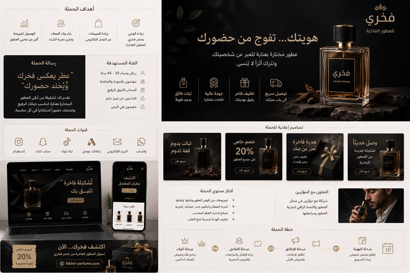

مشروع جديد
نرتب الفكرة، نحدد النطاق، ثم نختار المنتج أو الخدمات المناسبة للبداية.

خدمات وصل تك
من الموقع والتطبيق إلى البرمجة والهوية والتسويق؛ نختار ما يخدم الهدف المطلوب بدل جمع خدمات لا يحتاجها المشروع.
الخدمات
كل خدمة لها دور واضح، ويمكن تنفيذها مستقلة أو دمجها مع غيرها حسب نطاق المشروع.

مواقع ومنصات متجاوبة تعرض المشروع بوضوح وتخدم المستخدم بسهولة.
استكشف الخدمة
تطبيقات عملية بواجهات واضحة وربط مناسب مع خدمات المشروع.
استكشف الخدمة
متاجر منظمة لعرض المنتجات وإدارة الطلبات وتجربة الشراء.
استكشف الخدمة
أنظمة ولوحات تحكم ووظائف مخصصة عندما لا يكفي الحل الجاهز.
استكشف الخدمة
تنظيم وربط وأتمتة للمكونات والبيانات حسب احتياج العمل.
استكشف الخدمة
نظام بصري متناسق يعرّف المشروع ويثبت حضوره.
استكشف الخدمة
ملفات تعريفية مرتبة تعرض الشركة وخدماتها وأعمالها باحتراف.
استكشف الخدمة
محتوى وحملات تساعد المشروع على الظهور والتواصل مع جمهوره.
استكشف الخدمة
كيف نحدد المسار؟
قد يكون احتياجك موقعًا فقط، وقد يحتاج المشروع موقعًا وهوية وبرمجة في نطاق واحد. نحدد ذلك بعد فهم المرحلة الحالية وما الذي يجب أن يتحسن أو يُبنى.
ثلاث نقاط بداية
نرتب الفكرة، نحدد النطاق، ثم نختار المنتج أو الخدمات المناسبة للبداية.
نراجع الموجود ونحدد ما يستحق التحسين أو إعادة البناء قبل التنفيذ.
نرتب الهوية وطريقة العرض والمحتوى حتى يظهر المشروع بصورة أوضح وأكثر اتساقًا.
أرسل الهدف أو المشكلة الحالية، ونحدد معك نقطة البداية.